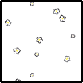

メインフェイズ サイクル2-2
行動：フォゲットミーノット 1st
GM：乾咲邸の倉庫を物色し、必要な物資を集めた狩人。GM：候補には上がったが持ちきれないと判断された物品を、
GM：とりあえず隅にまとめて置いてきたゆかりが、
GM：狩人たちのもとに戻ろうと倉庫の扉を開けると。
GM：――その扉は大きなダブルベッドの置かれた部屋につながっていた。
忽亡ゆかり：やめろ
夜高ミツル：ひーん
糸賀大亮：あっちでもセックス こっちでもセックス
乾咲フラン：HERE COMES A NEW SEX
夜高ミツル：セックスつながりか～
見学の水面：世は大淫行時代！！！！
乾咲フラン：この中でフランが一番淫行と程遠くなっちまった
乾咲フラン：セックスははるか遠くになりにけりですよ
糸賀大亮：インナー大亮が「えっ」ってなっちゃった
忽亡ゆかり：「いっ」
忽亡ゆかり：ぎょっとする。何度体験しても慣れない。
GM：ムードをこれでもかと演出する間接照明。部屋の隅に小型の販売機がある。
忽亡ゆかり：最初の驚きは、想定していた部屋と違うこと。ワンテンポ遅れて、目を凝らして、その部屋がどういう部屋なのかを理解する。
GM：それを理解した瞬間に、
GM：背後から抱きつかれて、ベッドへと押し倒される。
忽亡ゆかり：「なっあっ…………」
GM：押し倒されて、見上げると。

忽亡ゆかり：どさりとベッドへ倒れる。何者かに抱きつかれたことに気づいて、ベッドに押し倒されたことに気づいて、それでも振り切れなかった理由は──。
忽亡かなた：ゆかりをごく近くから見下ろしている。
忽亡ゆかり：──その人物の顔が、思い浮かんでいたから。
忽亡かなた：「……姉さん」
忽亡ゆかり：「これ、は……」
忽亡かなた：吐息混じりに呼びかけられる。
忽亡かなた：熱を感じる。人間の体温を。
忽亡ゆかり：「は、はいっ」
忽亡かなた：弟の体温を。
忽亡かなた：「……姉さん、俺」
忽亡かなた：かなたが手を伸ばす。ゆかりの胸元に触れる。
忽亡かなた：シャツをたどって、その裾をたくしあげていく。
糸賀大亮：え？ これ俺が妨害に入るの？
夜高ミツル：ひひひひ
夜高ミツル：この空間に大亮さんが
糸賀大亮：えっ……おっ……えっ？！
乾咲フラン：面白すぎる
夜高ミツル：引き笑いしちゃった
糸賀大亮：ゆかりさんに殺されない？
乾咲フラン：物語の説得力
忽亡ゆかり：「ちょっ……」
忽亡かなた：「姉さんが、これで」
忽亡かなた：「行かないでくれるなら」
忽亡かなた：「いや」
忽亡かなた：「姉さん」
忽亡かなた：ゆかりの傷だらけの肌があらわにされていく。
忽亡ゆかり：「まっ……まって、待ってって！」
忽亡かなた：「欲しいんだ」
忽亡かなた：ゆかりの耳元に口を寄せて、吐息混じりに囁く。
忽亡ゆかり：畜生！心の中で毒づく。それが幻と気づいてなお、その毒をかなたの姿の前で吐くことはできなかった。
忽亡ゆかり：ぎり、と歯をくいしばる。
忽亡ゆかり：「（……悪趣味なことを……！）」
忽亡ゆかり：そう思ってから、そう思い浮かべたことを後悔する。
忽亡ゆかり：悪趣味？誰が？魔女が？
忽亡かなた：いえ。
忽亡ゆかり：いや、違うだろう。
忽亡かなた：いいえ。
忽亡かなた：幻だと思ったのは
忽亡ゆかり：これは、この景色は。
忽亡かなた：ゆかりがそれを幻だと思ったのは
忽亡かなた：この光景が
忽亡かなた：この現象が
忽亡かなた：あなりにも自分に都合が良すぎることだったから。
忽亡かなた：でも、触れる肌は温かく。
忽亡かなた：吐息も声もごく近くに。
忽亡かなた：ゆかりの首に顔を埋めて、
忽亡かなた：その傷に触れた弟の唇の、
忽亡ゆかり：幻だ。
忽亡ゆかり：幻だろう。
忽亡ゆかり：そうに決まってる。そうじゃなかったら。だって。
忽亡かなた：その熱が。
忽亡かなた：「……姉さん」
忽亡かなた：ゆかりの肌に顔を埋めたかなたの背中が、震える。
忽亡ゆかり：「……い、家で待っててくれるんじゃなかったの……」
忽亡かなた：ゆかりを求める熱を帯びた声が、
忽亡かなた：その中に、悲痛な切実さが混じる。
忽亡かなた：「わかん、ない」
忽亡かなた：「待ってた」
忽亡かなた：「待ってた、けど」
忽亡かなた：「でも、部屋に戻ろうとしたら、…………」
忽亡かなた：「姉さん」
忽亡かなた：「これ、俺のせい？」
忽亡ゆかり：「やっ、そっ」
忽亡かなた：「姉さんに早く帰ってきてほしいって」
忽亡かなた：「行ってほしくないって」
忽亡かなた：ゆかりの背中に腕が回る。
忽亡かなた：抱き寄せて、ゆかりの胸に顔を埋めて、
忽亡ゆかり：熱が、触覚が、声と一緒に肌に触れる吐息が。
忽亡かなた：下着がずれる。
忽亡ゆかり：「でっ、でもさあ……！？」

忽亡ゆかり：混乱して、状況にかみ合わない返事が零れる。
忽亡ゆかり：いや、だって。
忽亡ゆかり：おかしいだろう。
忽亡ゆかり：不自然だ。不自然だよな？
忽亡かなた：「……一人、は」
忽亡ゆかり：不自然なはずだ。
忽亡かなた：「やだよ」
忽亡かなた：「戻ってきて」
忽亡かなた：「ずっと一緒にいて」
忽亡ゆかり：不安。不安はわかる。
忽亡かなた：「姉さん」
忽亡ゆかり：でもいくら、いくら不安だからって。
忽亡かなた：「これ以上遠くに行かないで」
忽亡かなた：「愛するから」
忽亡ゆかり：こんな迫り方をすることはなくて。いや、でもそれは、自分が彼をそう変えるようなことを言って……
忽亡かなた：「愛してるから」
忽亡かなた：背中を抱く腕が、少しずつ降りていく。
忽亡ゆかり：それとも弟は……。え？
忽亡ゆかり：いや、だって。
忽亡かなた：その線を、たしかな形を確かめるように手のひらで撫ぜて、
忽亡ゆかり：もともと、もともとこう、こんなに、確かに自分に依存するところはあって。ずっと一緒にいたし……あれ？
夜高ミツル：なんか……満を持して やっと このシーンが見られたって感じがある
乾咲フラン：わかる……
夜高ミツル：ずっとこのシーンを待っていた
乾咲フラン：いろいろなクライマックス
糸賀大亮：いつ来るんだろうなと思ってた
乾咲フラン：ゆかりさんもバグってきた
夜高ミツル：ちょうめちゃくちゃ
乾咲フラン：全部見てえ……
糸賀大亮：めちゃくちゃこのまま見届けたい
忽亡かなた：「見送って」
忽亡かなた：「姉さんが、いなくなって」
忽亡ゆかり：いや違う。ずっと一緒にはいなくて空白期間が、その間のこう、ブランクで、把握してないところとかもあったし。
忽亡かなた：「また一人になって」
忽亡かなた：「それで、やっと」
忽亡かなた：「……愛してる」
忽亡ゆかり：「いやっそのっ」
忽亡かなた：「愛してる、愛してるんだ、だから」
忽亡ゆかり：「か、かえって、帰ってきますから！」
忽亡かなた：スーツのベルトに手を掛ける。
忽亡ゆかり：体が動かない。
忽亡ゆかり：期待ではなくて、これは……
忽亡かなた：「行かないで」
忽亡かなた：「行ったら」
忽亡ゆかり：弟を拒むことへの恐怖だ。
忽亡かなた：「行ったら、また、傷つく」
忽亡かなた：「嫌だ」
忽亡かなた：「俺は姉さんを傷つけない」
忽亡ゆかり：手を放したくないのは自分も一緒で、
忽亡ゆかり：それなのにこの手を振り切って？
忽亡かなた：「傷つけないで、愛す、から」
忽亡ゆかり：いや、でも。だから。おかしいんだって。
忽亡ゆかり：不自然だろう、不自然だ。もっと、こう、おびえたりとか、戸惑ったりとか。いや、おびえて戸惑ってる。えっと？
忽亡かなた：ベルトを解いてゆかりのスラックスを下ろしながら、
忽亡かなた：かなたが顔をあげて、ゆかりを見る。
忽亡かなた：その頬はこれ以上ないほどに紅潮している。
忽亡ゆかり：「……ぁ……」
忽亡かなた：その瞳は熱に潤み、同時に不安に震えている。
忽亡ゆかり：いいのだろうか。許されるのだろうか。今自分は、とてつもなく、弟に酷なことをしているのではないだろうか。
忽亡かなた：おかしい。こんなのは間違っている。こんなに急ぐことはない、もっとちゃんと、お互い、合意をとって。
忽亡かなた：落ち着いたときに。話をして。話ができるときに。
忽亡かなた：そんなことは分かっている。
忽亡かなた：分かっていても、
忽亡ゆかり：でもだって、何が正しいのかわからない。自分の正義は弟と共にあった。だから弟のためが正しい、ことなんだけど。そうしたいのに。
忽亡ゆかり：弟のためって、なんだ？
忽亡かなた：「……行かないで」
忽亡かなた：「姉さん」
忽亡かなた：「ずっと、一緒にいよう」
忽亡ゆかり：「いき、っ、行っ……いやっ……そのっ……」
忽亡ゆかり：「……それは、まずいって」まだ決着がついていない。その間は、まだ自分は事件の当事者で。
忽亡かなた：「だめ？」
忽亡ゆかり：「…………」だめ。どうしてもその言葉が出てこない。
忽亡かなた：短い問いには、だからこその必死さが滲む。
忽亡かなた：ゆかりの内腿にかなたの指が這う。
忽亡かなた：そろりと撫でるだけの緩慢な接触。
忽亡ゆかり：「っ……！？」
忽亡ゆかり：自分の心臓の音が聴こえる。脈が、脇に、腹に、耳に、首に、流れてゆく血を感じる。
忽亡かなた：「…………」
忽亡かなた：熱に浮かされた切実さをもって、かなたはゆかりに顔を寄せる。
忽亡ゆかり：半面、体が寒い。鳥肌が、緊張が、不安が、恐怖が。だめだ。でもこれは、かなたに不安を。
忽亡ゆかり：ごまかすように、逃げるように、でも拒みたくないという中途半端な気持ちで、かなたに抱き着く。
忽亡かなた：「姉さん」
忽亡かなた：「……っ」
忽亡かなた：抱きつかれて密着する身体に、
忽亡ゆかり：これは……だめだ。おかしい。だって、おかしいじゃないか。
忽亡かなた：かなたの中心の、硬い感触が
忽亡ゆかり：でも、自分ではどうすることもできない。できない。無理だ。ここから逃げ出すことができない。突き飛ばすことも、いや、手を振り払うことすら。
忽亡かなた：ゆかりの腹部に触れる。
乾咲フラン：かなたくんの判定棒 って文章が脳に出てきちゃった
糸賀大亮：ひどい
乾咲フラン：処女、童貞、肉親、eraなら+2ついとるで
乾咲フラン：判定棒判定OKしちゃってる！
糸賀大亮：あら～
夜高ミツル：いいシーンだなあ……
夜高ミツル：しみじみしてしまった
忽亡かなた：いいシーン（たってる）
糸賀大亮：これぞ背徳破壊って感じだ
乾咲フラン：あれだけ大変だった背徳が、今では一番正統派にすら見えてくるよ
乾咲フラン：まっすぐな背徳（まっすぐな背徳ってなんだ？）
糸賀大亮：一週回って正統派背徳にすべてが戻ってきた
忽亡かなた：その頬をかなたが撫でた。
忽亡かなた：ごく近く。愛おしむように、眉を寄せて。
忽亡かなた：「大丈夫」
忽亡かなた：「大丈夫、だから……」
忽亡ゆかり：目の前にいるのは、男性だった。いける気がするみたいなこと言ってた。それって、でもどういう意味なんだろう。
忽亡かなた：ゆかりの顔を自分へと向けさせて、
忽亡ゆかり：ずっと考えていた。このまま、彼のために生きるなら、自分は手を引くべきなんだろうかと。
忽亡かなた：耳を擽り、後頭部に手を回す。
忽亡かなた：手放さない。
忽亡ゆかり：どうなんだろう。かなたは何を望んでる？どうしたら、あなたを私は幸せにできるだろう？
忽亡ゆかり：将来のことばかり考えていた。答えも出ずに、ぐるぐると回る問いを問いかけ続けていた。
忽亡ゆかり：そちらにとらわれて、もっと目先のことまで考えられていなかった。
忽亡ゆかり：心の準備なんて、何もできていなかった。
忽亡ゆかり：いつも思い浮かべるのは、都合のいい妄想ばかり。それが現実となって襲い来ることが、どれほどの恐怖と不安と重圧か。
忽亡ゆかり：今まで、何よりも、何よりも大事に守ってきた弟を。
忽亡かなた：「姉さん」
忽亡ゆかり：ここで、よりによって、自分が汚すのか？
忽亡かなた：「姉さん」
忽亡かなた：「愛してるよ――」
忽亡かなた：放させないとでもいうように、その唇に、唇を重ねる。
忽亡ゆかり：ぐさりと胸を刺す。その直後に──
忽亡かなた：忽亡ゆかりの幸福『背徳：忽亡かなたへの衝動』を破壊します。
忽亡ゆかり：TASUKETえ
夜高ミツル：めちゃめちゃだ
忽亡ゆかり：これほど「逆らえねえな」と思ったことはない
忽亡ゆかり：援護すら……援護すら……できるのかわからない……
糸賀大亮：ゆかりさん……
糸賀大亮：これノーサバトか
乾咲フラン：ゆかりさん…
夜高ミツル：サバトないのか
乾咲フラン：ノーサバトかあ
忽亡かなた：はい、では、そうですね。
GM：ゆかりが戻ってこないことに気付いた狩人たちは、
GM：真城の勘に従って、とあるラブホテルへと辿り着いていました。
GM：制止しようとする警備員を無理矢理振り切って辿り着いた一室の前に、
フォゲットミーノット：フォゲットミーノットが立って、狩人たちを出迎える。
真城朔：「…………」
乾咲フラン：「これは……！」ラブホテルを見て思い浮かぶのはゆかりの弟の顔。ドカドカ入り込んで——FMNに出遭う。
糸賀大亮：いくら何でも、そんなまさか、という言葉を道中何回吐こうと思ったか分からないが。
糸賀大亮：場違いな晴れ着を見て、真城が正しかったことをようやく確信できた。
夜高ミツル：あまりにも場違いな武装で、吸血鬼と対峙する。
フォゲットミーノット：フォゲットミーノットは人差し指を立てるといたずらっぽく笑って、
フォゲットミーノット：「そっとしておいてあげることは、できない？」
糸賀大亮：「……」杭を構える。「どいてもらう」
乾咲フラン：「もっと段取りってモノがあるだろう……」
フォゲットミーノット：困ったように首を傾げる。
フォゲットミーノット：「時間がね」
フォゲットミーノット：「ないから」
フォゲットミーノット：「あの娘、私と同じなのよ」
フォゲットミーノット：「大切なもののためなら、何もかもを捧げられた」
フォゲットミーノット：「なんでもしてやりたいと思って、何もかもを捨ててきた」
糸賀大亮：「…………」
フォゲットミーノット：「それは単なる献身じゃなくてね」
フォゲットミーノット：「自分がそうしたいと思うから、それで満たされるから、そうしてる」
フォゲットミーノット：「どこまで行っても、エゴなんだけど」
フォゲットミーノット：「でも、私もそうだから」
フォゲットミーノット：「ちょっとくらい、甘えさせてあげたら、だめ？」
乾咲フラン：「……」
フォゲットミーノット：AST
BloodMoon : ランダム全特技表(3,3) → 胴部3：呼吸器
糸賀大亮：結界使って……2D6+4？
糸賀大亮：3以上なので援護も興奮剤もいらんな
乾咲フラン：守れる男
夜高ミツル：いっけ～
糸賀大亮：2D6+4>=7 （判定：殴る）
BloodMoon : (2D6+4>=7) → 5[1,4]+4 → 9 → 成功
夜高ミツル：殴った
フォゲットミーノット：OK
夜高ミツル：糸賀大亮のテンションが9増加！（テンション：15->24）
夜高ミツル：糸賀大亮は激情を獲得！（激情：1->2）
夜高ミツル：フォゲットミーノットの血量が5減少！（血量：5->0）
忽亡ゆかり：「んっ、うっ……！」
忽亡かなた：性急な手つきでジャケットを剥ぎ取り、下のシャツをずりあげて、
忽亡ゆかり：頭が真っ白に。
忽亡かなた：姉の裸身を露わにしていく。
忽亡ゆかり：混乱。混乱、そうだ、混乱している。それはわかる。自分は今焦っていて、正常な判断力を失っている。それは自覚している。
フォゲットミーノット：ドアの前のフォゲットミーノットは腕を振り、
フォゲットミーノット：そうして、青い花畑が展開される。
フォゲットミーノット：ラブホテルの廊下にはおよそありえない夢幻の花畑。
フォゲットミーノット：その果てに首を傾いで、狩人たちへと微笑みを浮かべている。
糸賀大亮：一歩足を踏み出す。
忽亡かなた：ゆかりが抵抗しないのをいいことに、
忽亡かなた：かなたはその身体を貪っていく。
忽亡かなた：再びベッドへと姉を組み伏せる。
糸賀大亮：杭を構えて、フォゲットミーノットが背にしているはずの扉へ向かおうとする。
糸賀大亮：「退け」
フォゲットミーノット：「…………」
フォゲットミーノット：「彼女、無理してるでしょう？」
糸賀大亮：言って聞くとは思っていない。言葉とともに踏み込む。
忽亡ゆかり：声が出ない。
忽亡ゆかり：自分は混乱しているから、ここで彼の人生を左右するような判断をするのは得策ではなくて……
忽亡かなた：かなたの手が、肌を這う。
忽亡ゆかり：……でも、何もしなかったら、弟を受け入れるという判断を下している……ことになるのか？
忽亡かなた：その手のひらがひどく熱い。
忽亡ゆかり：触れた場所がじっとりと吸い付く。汗で濡れている。どちらの？
糸賀大亮：「今じゃないだろう」
糸賀大亮：だめだ、どう大亮が言い返しても面白くなってしまう。
乾咲フラン：大丈夫大丈夫！
フォゲットミーノット：がんばれよ！
忽亡かなた：ふたりの。
忽亡かなた：熱が重なっている。汗が混ざっていく。
糸賀大亮：「それは、」
糸賀大亮：「そんなはずはない」
忽亡かなた：ゆかりの胸元に、湿った吐息がかかる。
フォゲットミーノット：「…………」
フォゲットミーノット：「そうね」
フォゲットミーノット：「彼女らの将来は、長い」
糸賀大亮：相手の言葉に、一瞬だけ、いやな想像が走ったが。
糸賀大亮：振り払うように言って、もう一歩。
フォゲットミーノット：「でも、私の干渉できるのは、そう長くないから」
フォゲットミーノット：「……あんまりね」
フォゲットミーノット：これは正直な話、と前置いて。
フォゲットミーノット：「朔の近くには、いてほしくないわ」
真城朔：「…………」
忽亡ゆかり：ここは、自分の家ではない。見知らぬ場所。時は狩りの最中。
忽亡かなた：けれど、目の前にはかなたがいる。
糸賀大亮：ゆかりの真城に対する態度。己の立場として刺々しさを保つ彼女は。
忽亡ゆかり：とっさにダメだと思ってしまう。ここは、彼を止めるのが正しいことに思える。けれどそれは自分が怯えているだけではないだろうか？
忽亡かなた：ゆかりの首に唇を触れて、筋を辿って、鎖骨を食む。
糸賀大亮：なるほど母親の立場からすれば、あまり接近させたくはないかもしれない。
忽亡ゆかり：いや、違う。それよりも前に。
糸賀大亮：フォゲットミーノットの言葉を聞いてようやく、
忽亡ゆかり：この行動の原動力は、姉を失いたくないという気持ちからで……
忽亡かなた：骨に歯の当たる甘い痛み。
糸賀大亮：どこか安堵して、
忽亡ゆかり：そう思わせる行動を、自分がしていて。
忽亡かなた：内腿を触れていた手が、そろそろと上へと上がっていって。
忽亡ゆかり：必ず帰ってくるなんて言葉は、気休めでしかないことを二人とも理解していて。
糸賀大亮：「──」
忽亡ゆかり：拒むとして、どんな言葉で言い返せばいいというのか。
忽亡ゆかり：将来のことを考えて、二人の人生のことを考えて。それが大事で、それは当然のことだけれど……
糸賀大亮：その杭を、フォゲットミーノットへ向けて振るう。
フォゲットミーノット：振り下ろされる杭を。
フォゲットミーノット：大亮を、フォゲットミーノットは見ていない。
フォゲットミーノット：その肩越しに、違うものを見つめている。
忽亡ゆかり：……その将来がやってくるかは、わからないのだ。
忽亡かなた：「姉さん」
糸賀大亮：その違和感に眉を顰めながらも、杭を突き立てる。
忽亡ゆかり：「…………な、に……？」
忽亡かなた：柔らかな肉を、傷だらけの肌を辿る指が、その下着にかかる。
忽亡かなた：「…………」
忽亡かなた：「いい？」
フォゲットミーノット：フォゲットミーノットはふっと微笑んで、
糸賀大亮：ドレス姿の吸血鬼を退け、その向こうの扉へと向かおうと。
フォゲットミーノット：その場から一歩、身を引いた。
フォゲットミーノット：その刹那、
忽亡ゆかり：「……それは……」
フォゲットミーノット：光とともに、

フォゲットミーノット：青い花畑が白に塗り替わる。真城朔：「――糸賀さん！」
糸賀大亮：「！」
真城朔：その花畑はもはや、
真城朔：道を塞ぐものではない。
真城朔：大亮の目の前には扉がある。
糸賀大亮：一瞬、背後からかかった声に目を見開いたが、
真城朔：いつしか大亮の踏み越えた遠く後ろに、フォゲットミーノットが立っている。
忽亡かなた：かなたは。
忽亡かなた：ゆかりを見つめている。
糸賀大亮：構わず、扉を、
忽亡かなた：指が、
糸賀大亮：蹴破った。
忽亡かなた：下着にかかった指に、力が込められて。
忽亡ゆかり：覚悟するように、目を閉じた瞬間。
GM：扉の蹴破られる大きな音が部屋に響く。
忽亡かなた：「……っ！？」
忽亡ゆかり：乱暴な音に、はっと我に返る。
糸賀大亮：「──忽亡さん！」
忽亡ゆかり：「し、が、さん？」
糸賀大亮：叫んで、足を踏み入れて……
忽亡かなた：ゆかりのごく近くで、かなたが目を見開く。
忽亡かなた：その裸身を隠すようにゆかりを抱き締めた。
糸賀大亮：当然そこには見覚えのある顔があり。
乾咲フラン：「大丈夫か忽亡クン！」フランもなだれ込む。
忽亡ゆかり：「…………」頭を包むモヤが急速に晴れてゆく。
夜高ミツル：続いて、その部屋に足を踏み入れる。
真城朔：真城は部屋には入らない。廊下に立っている。
真城朔：フォゲットミーノットと花畑の消え失せた廊下から、その部屋を見つめていた。
糸賀大亮：「…………」
忽亡ゆかり：「……あー……」
忽亡ゆかり：「……ちっす？」へら、と苦笑いして、そんな間の抜けた挨拶をした。
忽亡かなた：「…………」
忽亡かなた：ゆかりを抱き締めたまま、入ってきた男たちにじろりと目を向ける。
乾咲フラン：（大丈夫ではなかった……！）と思っている。
忽亡かなた：吸血鬼の行動への妨害への妨害と姉弟インモラルセックスのRPを同時にする実績を解除
乾咲フラン：リワード獲得
糸賀大亮：大股に二人の方へ距離を詰めていく。
忽亡かなた：布団をとってゆかりへとかぶせます。
糸賀大亮：「邪魔だったか」と、ゆかりに聞く。
夜高ミツル：ゆかりの笑ったのを見て少し緊張を解き、それから気まずそうに目を泳がせた。
忽亡ゆかり：「……いや」
忽亡ゆかり：「ありがとう」
忽亡ゆかり：「やっぱね。良くないよねえ……」
糸賀大亮：頷く。
忽亡かなた：「……姉さん……」
糸賀大亮：「急に消えたから、探していた」
乾咲フラン：「まあ、仕事中だからな……」
忽亡ゆかり：「よく見つかったね」
忽亡かなた：狩人を見つめる瞳には、どうしても敵意がちらつくのだが。
糸賀大亮：「ああ。……真城がここだと」
忽亡ゆかり：「真城が……？」
忽亡ゆかり：「……そっか」
真城朔：真城は依然、部屋には入らないでいる。
糸賀大亮：そう言う時こそ躊躇いがちな言葉遣いになったが、また頷き返して。
糸賀大亮：かなたの方を見る。
忽亡かなた：大亮を睨み返します。
糸賀大亮：「……お姉さんからは、どれぐらい話を聞いている」
忽亡かなた：「……いっぱい聞いたよ」
忽亡かなた：「何と戦ってるか、とか」
忽亡かなた：「どれくらい傷ついてきたか、とか」
忽亡かなた：大亮を睨み返します。
忽亡かなた：「俺が、……本当は死んでた、とか、……………」
糸賀大亮：「なら、なぜ自分がここにいるか分かるか」
糸賀大亮：その視線を受け止めて、問い返す。
忽亡ゆかり：大亮さんのその切り返し最高
忽亡かなた：こいつ～～
忽亡かなた：これはかなた発言です。
忽亡ゆかり：姉には言えないことを言ってくれるの本当にありがたいな……
忽亡かなた：むっすりと黙り込んでいる。
糸賀大亮：じっと見つめる。
忽亡かなた：「……わかってるよ」口を尖らす。
忽亡かなた：「わかってる、……」
忽亡かなた：「……わかってたんだ」
忽亡かなた：やるせない想いを吐き出すような声。
忽亡かなた：「……止めたら、ダメだって」
忽亡かなた：「姉さんは、行かなきゃ、ダメなんだって……」
糸賀大亮：「……」
忽亡かなた：「…………」
糸賀大亮：「連中の干渉は」
糸賀大亮：「人間が抵抗しようとか、分かってるとか」
糸賀大亮：「そういうので対抗できるものじゃない」
忽亡かなた：「……でも」
忽亡かなた：「だから、…………」
忽亡かなた：「……行かないでほしいのも、本当なんだよ」
忽亡かなた：「姉さん……」
忽亡ゆかり：「……うん」
忽亡かなた：姉に目を向けられないままに。
忽亡かなた：けれどその声は切実だった。
忽亡ゆかり：「……やだよね」
忽亡かなた：「……ごめん」
忽亡ゆかり：「……うん。私もごめん」
忽亡かなた：ぎゅ、とシーツを握り締める。
忽亡ゆかり：自分だってそうだ。弟を置いて行くことに、心苦しさを感じないはずもない。
忽亡ゆかり：今まで狩人をしてきて、こんな気持ちになったのは初めてだ。
忽亡ゆかり：死への……いや、離別への恐怖。弟を一人置き去りにすることへの恐怖だ。
忽亡かなた：「…………」
忽亡かなた：「……あの」
忽亡かなた：狩人たちを見上げる。
忽亡かなた：「出ていって、もらえます？」
糸賀大亮：チラッと自分が蹴破ったドアを振り返って、
糸賀大亮：布団をかぶせられたままのゆかりの方を見てから、
夜高ミツル：「え、あ」
夜高ミツル：「ああ、」
忽亡かなた：「…………」
糸賀大亮：「それほど時間は取れない」と言って、まあ……廊下に行くか。
糸賀大亮：蹴破っちゃったな……と思っている。
夜高ミツル：気まずい感じで出ていく。
夜高ミツル：吸血鬼が去った今、ここはただのラブホで、俺たちはラブホの個室に武器を持って押し入った不審者で……。
夜高ミツル：血塗れだし、学ランだし。
真城朔：廊下では真城がホテルスタッフを雑に追い返していました。
糸賀大亮：雑に追い返されてる。
糸賀大亮：まあ俺が報告するまでもなく通報されるだろうから、ほんとに時間ないんだよな。
乾咲フラン：とりあえず部屋からは出るか
真城朔：すでにされてるまであるな。
夜高ミツル：ホテルから出た方がいいかな……。
乾咲フラン：吹き飛んだ扉を申し訳程度に立てかけておこう
忽亡かなた：美配慮
糸賀大亮：なんかその光景前も見たな
GM：では室内。
忽亡かなた：「……姉さん」
忽亡かなた：脱がせた服を拾って差し出す。
忽亡ゆかり：「ありがと」
忽亡かなた：「…………」
忽亡ゆかり：ジャケットを直し、スラックスを穿く。
忽亡かなた：背中を向けてベッドに腰掛けています。
忽亡ゆかり：「……かなた」
忽亡ゆかり：「進路はもう決めた？」
忽亡かなた：「え」
忽亡ゆかり：「高校卒業したら、どうしたい？」
忽亡かなた：あっけにとられたような声を出して、ゆかりを見上げる。
忽亡かなた：「…………」
忽亡かなた：「え、と」
忽亡かなた：「……いや」
忽亡かなた：「うーんと……」
忽亡かなた：もがもがと口ごもって。
忽亡かなた：「…………」
忽亡かなた：「……姉さんが」
忽亡かなた：「帰ってきたら、相談させてほしい……」
忽亡ゆかり：「ん。よし」
忽亡ゆかり：「大丈夫。この歳の男子なんて、まだ将来のことがわからないのが普通だよ」
忽亡かなた：「……知ったようなこと言うなあ」
忽亡かなた：ちょっと余裕が戻ってきた。
忽亡ゆかり：「……でも」
忽亡ゆかり：「こういう事するんなら、ちゃんと将来のことは先に考えなきゃな」

夜高ミツル：ゆかり～～～
夜高ミツル：理……
忽亡かなた：姉さん……
乾咲フラン：理性
糸賀大亮：えらい
忽亡かなた：姉さんはいつも正しい
忽亡かなた：「…………」
忽亡かなた：「はい…………」
忽亡かなた：項垂れた。
忽亡ゆかり：「あと2年とちょっとで成人だ」
忽亡ゆかり：「その時、かなたはどんな大人になってるかな‥…」
忽亡かなた：「……姉さんに」
忽亡かなた：「誇れるように、がんばるよ」
忽亡ゆかり：「うん。待ってる。楽しみだ」
忽亡かなた：立ち上がると、着替えを終えたゆかりへと手を差し出す。
忽亡かなた：「だから、ちゃんと見守ってくれよ」
忽亡ゆかり：手を取り、ゆっくりと立ち上がる。
忽亡かなた：手を繋いでいる。
忽亡かなた：睦事のあとのカップルのように手を繋いで、部屋から出てくる。
忽亡かなた：が、見慣れない上にひときわ血まみれの人物を認めて目を丸くした。
真城朔：「…………」
真城朔：真城は俯いている。
夜高ミツル：真城の隣に寄り添って立っている。
忽亡ゆかり：「あっ」うっかり声が漏れる。やべ、という顔。
忽亡かなた：「？」
忽亡かなた：姉の声にそちらを向いた。
忽亡かなた：「……なんか、どうかした？」
忽亡ゆかり：「…………行ってくるよって流れになったところで……あんな血まみれの男を見られたので、お姉さんは今、ちょっと気まずい気持ちです」
真城朔：ミツルの手のひらに触れかけて、それができなくて、引っ込める。
忽亡かなた：「え」
忽亡かなた：「あー」
忽亡かなた：「うーんと……」
忽亡かなた：ちら、と真城を見てから。
忽亡かなた：「……姉さんが気にすることじゃ…………」
糸賀大亮：ちょっと息を吐いた。
糸賀大亮：「悪いが、……警察が突入してこないうちに、早めに移動しよう」
夜高ミツル：ちょっと悩んで、強引に真城の手を取り。
夜高ミツル：「……そうですね。行きましょう」
真城朔：「っ」
忽亡ゆかり：「よう真城」
忽亡ゆかり：「……挨拶、しとく？」
真城朔：手を掴まれて息を呑んで、その矢先に声をかけられて、呼吸が止まる。
乾咲フラン：「それもいいが、どうせなら皆で移動しながら交流してくれたまえ」非常階段に向かいながら。
真城朔：ちらちらとゆかりに、ゆかりとかなたに目を向けながら、
真城朔：唇を開きかけたところでフランの言葉に身体を強張らせる。
忽亡かなた：「……姉さん」
忽亡ゆかり：「ん？」
忽亡かなた：「挨拶って……？」
忽亡かなた：「なんかあるの？ この人」
忽亡ゆかり：「あー……ま、とりあえず外に出ようか」服の皺を伸ばしながら、非常階段へと向かう。
糸賀大亮：ぞろぞろ
忽亡かなた：そうですね、かなたはゆかりと共に出ていきます。
夜高ミツル：真城の手を引いて移動する。
真城朔：引かれていく。
真城朔：血の痕の残る、足元を見ている。
乾咲フラン：手袋を着けて非常階段のドアを開けながら皆を促す。
忽亡ゆかり：「結局どこなんです？ここ」
糸賀大亮：「市内のホテルだ」
忽亡ゆかり：「……あー……ここに繋がってるのか……」非常階段から外の景色を見て。
忽亡ゆかり：知っている場所だ。入ったことはない……というかラブホテルがあったことも知らなかったけど。
忽亡かなた：「わあ……」
忽亡かなた：実際自分が不可思議に直面したのは結構初めてという感覚なので感嘆の声を漏らしています。
真城朔：「…………」
真城朔：「……忽亡、さん」
忽亡ゆかり：「ああーん？」
真城朔：「…………」
真城朔：「俺は、……」
真城朔：「あなたが、許す、……なら」
真城朔：「……知らせても、いいって、言うなら…………」
真城朔：重い足取りで、導かれるままに非常階段を降りながら、
真城朔：その足が止まりそうになっては、ミツルの手を握りしめて、どうにか進む。
真城朔：「…………」
夜高ミツル：「…………」真城の手を引きながら。
夜高ミツル：言葉が、足が止まる度、励ますように手に力を込める。
真城朔：「……あなたに、決めさせることじゃ、……」
真城朔：「決めさせてしまう、けど、…………」
真城朔：「でも」
真城朔：「それがあなたたちにとって、余計なのか、そうじゃないのか」
真城朔：「俺には、わからない……から」
真城朔：「…………」
真城朔：「……ごめんなさい……」
忽亡ゆかり：「はぁー」
忽亡ゆかり：「ウダウダうるっせーなー！」ばんばんと背中を叩く。
真城朔：「っ」
忽亡ゆかり：「なんだなんだ、ぼそぼそ喋りやがって。もっと普段ふてぶてしい喋り方するキャラだろお前は」
忽亡ゆかり：そう言って、かなたのほうを向き
忽亡かなた：「？」
忽亡かなた：ちょっとさすがに居心地が悪そうな顔になっています。
忽亡かなた：明らかに異様な空気感に戸惑っている。
忽亡ゆかり：親指でちょいちょいと真城を指し
忽亡ゆかり：「こいつです、仇」
忽亡かなた：「えっ？」
糸賀大亮：カン、とひときわやたら大きく足音を鳴らしてしまった。
真城朔：「…………」
乾咲フラン：自分の後ろで大変なことが気軽に起きているなと思った
忽亡かなた：かなたは目を丸くしています。
夜高ミツル：こっちも えっ？て顔になってる。
忽亡ゆかり：「あーもー。自分で説明しろ。ハキハキ喋れ」
真城朔：「…………」
真城朔：唇を噛んでどうにか顔を上げて、
真城朔：かなたを見て、また表情を強張らせる。
真城朔：「……俺」
忽亡ゆかり：背中を叩く。
真城朔：「っ」
真城朔：「俺が、あなたたちを」
真城朔：「殺しました……」
忽亡かなた：さすがにまだぽかんとしています。
忽亡かなた：真城を見て、ゆかりの顔を見る。
真城朔：「俺、がっ」
真城朔：声が上擦る。
忽亡ゆかり：「母さんを生き返らせるのに必要だったんだってよ」
真城朔：「…………」
夜高ミツル：ゆかりさんがこうしてくれるのめちゃめちゃありがたいな……
乾咲フラン：うｎうｎ…
忽亡かなた：「なんで？」
忽亡かなた：「あんな人、…………」
忽亡かなた：「あっ」
忽亡かなた：「えっ」
忽亡かなた：混乱している。何もかもに。
忽亡ゆかり：「違う違う、こいつ」
忽亡ゆかり：「こいつも自分の母さん死んでんの」
忽亡かなた：「う、うん、俺らのじゃなくて……」
忽亡かなた：「…………」
真城朔：「……ごめんなさい」
真城朔：「だから」
真城朔：「俺のせい、で」
真城朔：「全部……」
真城朔：「巻き込まれたのも、その、……」
真城朔：「……忽亡さんが戦ってきたのも」
真城朔：「戦わなきゃ、いけないのも」
真城朔：「全部、俺が、……」
真城朔：「俺のせいで」
真城朔：「……ごめんなさい」
真城朔：「ごめんなさい……」
忽亡かなた：「…………」
忽亡ゆかり：「まあそうだな！だいたいそう！動機は言い訳にはならんよな！」肩を組んで
忽亡ゆかり：「おらっ、この悪ガキめっ」脇腹を連打
真城朔：つつかれて身を竦める。
忽亡かなた：唖然として二人の様子を見ていたが。
忽亡かなた：「……あ、え」
忽亡かなた：「姉さん」
忽亡かなた：「姉さん、いいの？」
忽亡ゆかり：「何が？」
忽亡かなた：「いや……」
忽亡かなた：「なんか、距離近いから……」
忽亡かなた：「全部知ってるみたいだし……ええと……」
忽亡かなた：周回遅れの頭をぐるぐるとさせている。
忽亡ゆかり：「いや、全然よくない。こいつ大っ嫌い。マジ最低な奴だから」
忽亡かなた：「…………」
忽亡ゆかり：「かなたも恨み言とかいろいろ言っていいんだぞー？」
真城朔：身を縮めながら、びくびくとかなたを窺っている。
夜高ミツル：雲行きによっては割って入ろうと思っていたが、ゆかりの調子が思いの外軽くて驚いている。
忽亡かなた：「……いや」
忽亡かなた：「まあ」
忽亡かなた：「謝られても、無理だし」
忽亡かなた：「知んないしな……」
忽亡かなた：恨み言というよりは、呆気にとられた気配のほうがまだ強いが。
忽亡ゆかり：「それもそっかー……」いくら当の本人とはいえ、なにしろ殺されたとなってしまえば、それは実感も薄いだろうな、とは思った。
真城朔：「…………」
忽亡かなた：「……無理なのは」
忽亡かなた：「姉さんが戦わなきゃならない方だよ」
忽亡かなた：「無理っていうのは、だから、ええと」
忽亡かなた：「許せない、って方の……」
忽亡かなた：「っていうか、ずっと大変な思いさせてきたみたいで」
忽亡かなた：「俺はそれを見てないんだけど」
忽亡かなた：かんかんと非常階段を降りて、地上へと辿り着く。
忽亡かなた：「実感ないけど、その原因になったヤツをさ」
忽亡かなた：「ごめんなさいって軽すぎるし」
忽亡かなた：「でもなんか、わざわざ罵倒するためにアタマひねってやんのも」
忽亡かなた：「正直」
忽亡かなた：「そんなことしてやる価値もないっていうか」
忽亡かなた：そこでゆかりを見て。
忽亡かなた：「姉さんがそうしてほしいならするけど」
真城朔：「…………」
忽亡ゆかり：「……まあ」
忽亡ゆかり：「庇うわけじゃないけども、それに関してだけは……」
忽亡ゆかり：「戦う羽目になった、というよりは、戦えるようになった、って言い方のほうが近いのかもね」
忽亡かなた：「？」
忽亡かなた：首をかしげる。
忽亡ゆかり：「私さ、今の会社には狩人としてスカウトされたんだ」
忽亡かなた：「ああ……」
忽亡かなた：「強かったもんね、昔から」
忽亡かなた：納得している。
忽亡ゆかり：「……スカウトされたきっかけは、どうも事件絡みでそういうのが見えるようになったからみたいなんだけど」
忽亡ゆかり：「その時、スカウトの人が言った言葉が最高に傑作でさ。何だと思う？」
忽亡かなた：「……な、なに……？」
忽亡かなた：「つよい？」
忽亡ゆかり：こほん、と咳払いして。
忽亡ゆかり：「『君は誇り高きテンプル騎士団の末裔だ。人間社会を牛耳る悪しきヴァンパイアを滅ぼす使命がある』」
忽亡かなた：「えっ？」
忽亡かなた：本日二回目。
忽亡ゆかり：「つまり、なんだ」
忽亡ゆかり：「よくわからんけど、結局いつかはこっちの業界に引っ張られてきたかもしれないってことさ」
忽亡かなた：「…………」
忽亡かなた：「……それ、俺もその……騎士団、の末裔ってことにならない？」
忽亡ゆかり：「知らん。頭のイカレたスカウトのおじさんとはそれっきりだ」
忽亡かなた：「そっかあ…………」
忽亡かなた：そっかあ…………。
忽亡かなた：なんやかんやと真城に目を向けて、
忽亡かなた：「……まあ」
忽亡かなた：「とにかく今は結構それどころじゃないっていうか」
忽亡かなた：「俺も姉さんもいっぱいいっぱいだからさ……」
忽亡かなた：眼鏡を直して、
忽亡かなた：「後で罵倒したくなったら呼ぶかもしんないけど」
忽亡かなた：「したらまあ大人しく出頭してよ」
忽亡かなた：「しないかもしんないけど」
忽亡ゆかり：「……だってよ」
真城朔：「…………」小さく頷いて、
忽亡ゆかり：「寛大な弟に感謝しろ！『ははーっ』と言いながら頭を下げろ！」
真城朔：「……え、っと」
真城朔：「は」
真城朔：「ははー……」
真城朔：言われるままにした。
忽亡かなた：ええ……みたいな顔で見ている。
忽亡ゆかり：「貴様！ふざけてるのか！！！」ガッガッガッ！
真城朔：「う」
真城朔：「……え」
糸賀大亮：振り返った。
夜高ミツル：「く、忽亡さん……」
忽亡かなた：「……この人大丈夫なの？」
忽亡かなた：素朴な疑問
乾咲フラン：「こら～ケンカしな～い」物陰を移動しながら
忽亡ゆかり：「はっ……つい……」
真城朔：首をすくめている。
忽亡かなた：かなたくん視点だと初対面の血まみれの同い年くらいの男が自分たちの仇で中身が幼児
忽亡かなた：意味がわからん
糸賀大亮：理解が追い付かない
夜高ミツル：大丈夫なのってなるよな……
夜高ミツル：仇っていうかこれ舎弟じゃないですか？
糸賀大亮：女児
忽亡かなた：スマホで位置情報を確認して
忽亡かなた：「……あー」
忽亡かなた：「まあ、一人で帰れるか」
糸賀大亮：「……そろそろ……」いいか、と言おうとして、飛び出した疑問に口を噤んだ。
忽亡かなた：「？」
糸賀大亮：「いや、……忽亡さんもそれでいいか」一人で帰して。
忽亡ゆかり：「一人かぁ……」
忽亡ゆかり：「……よし真城、アイデアを出せ。弟どうするのが安全だと思う？」
真城朔：「えっ」
真城朔：「…………」
忽亡ゆかり：「５」
忽亡ゆかり：「４」
糸賀大亮：おいおい……
忽亡ゆかり：「３」
真城朔：「あ、……」
乾咲フラン：はわわ
忽亡ゆかり：「２ー」
真城朔：「う」
真城朔：「…………」
忽亡ゆかり：「１０～！はい遅い～！」げしげし
糸賀大亮：「忽亡さん……」
乾咲フラン：「ああ～」あぁ～
真城朔：縮こまる。
忽亡ゆかり：「で、どうよ、実際」
真城朔：「…………」
真城朔：「……送って」
真城朔：「いけるなら、それが、……」
真城朔：「また来ないとも限らない、けど」
真城朔：「でも」
真城朔：「……心配なら」
真城朔：「一人にしてしまって、どうにかなるよりは、そうした方が」
真城朔：「できることは、した、方が……」
真城朔：それでも家に一人にするのなら変わらないのかもしれないけど、と小さく付け加える。
忽亡ゆかり：ちっ、と舌打ち。「採用」
真城朔：「…………」
忽亡かなた：採用なのに舌打ちした……と思っています。
夜高ミツル：したなあ……
忽亡ゆかり：どのみち、連れていくという選択肢は難しいし、どこに置いておいても花畑にさらわれないとは言い切れないし。
忽亡かなた：「……別にそこまで過保護にならなくてもいいけど……？」
忽亡かなた：「結構近いよ。家から。ほら」スマートフォンの画面をゆかりに見せます。
忽亡ゆかり：「一人で帰ると死にます」
忽亡かなた：「ええ」
忽亡ゆかり：「ということで、送ろうと思うが……」狩人たちに確認の目を向ける。
糸賀大亮：「異存はない」
夜高ミツル：「俺も、それがいいと思います」頷いて。
乾咲フラン：「そうだな」
糸賀大亮：彩花ちゃんも送ったしな。まあ、あっちは移動が自力では難しかったからだけど。
真城朔：「…………」俯いています。
忽亡かなた：「ええ」
忽亡かなた：「うーんと」
忽亡かなた：「じゃあ」
忽亡かなた：「……お願いします？」
忽亡かなた：本当に……？ みたいな顔をしている。
忽亡ゆかり：「うっす！」
糸賀大亮：マンションに武器を持った血まみれの集団が。
忽亡かなた：そもそもこの人達通報されないのかな……大丈夫なの……？ という気分になっている。
乾咲フラン：ワッサワッサと
夜高ミツル：武装チンピラどもがよ～
乾咲フラン：一人は光ってるし
GM：ちなみにホテルに警察の来た気配はありません。
乾咲フラン：おやぁ
糸賀大亮：おっと。
忽亡ゆかり：最初の認識されてないあれが続いてるんかな
GM：狩人たちには知るよしのないことでしたが、ホテル全体に幻惑の術がかかっていたようです。
GM：通報が届いていない。
糸賀大亮：なるほど。
夜高ミツル：気が利いてますね。
忽亡かなた：「姉さん」
忽亡ゆかり：「はい」
忽亡かなた：狩人たちをちらりと見て、少し悩む様子を見せたが
忽亡かなた：「……手、繋いでていい？」
忽亡かなた：「家につくまで」
忽亡ゆかり：返事よりも先に、手を握って
忽亡ゆかり：「もちろん！」
忽亡ゆかり：かなたがその手を握り返せば、逃げるように、わずかに手を緩めて。
忽亡ゆかり：小指一本を出して、かなたの小指に絡ませた。
忽亡ゆかり：かならず帰ってくると、誓いを込めて。
忽亡かなた：小指が握り返される。
忽亡かなた：姉の笑顔を、
忽亡かなた：また見られるものと信じて、かなたも同じように笑い返した。
夜高ミツル：ゆかりさんの真城の扱い、かなり優しさだったな……
乾咲フラン：ですね…
忽亡かなた：ゆかりお姉さんのやさしさとやさしさを受け止めきれない女児だった
真城朔：女児じゃねえよ！（諦めろ……）
糸賀大亮：ほんとに女児
夜高ミツル：ちょっと真城にフォロー入れとこっかな
真城朔：はーい
真城朔：「…………」
夜高ミツル：「忽亡さんのあれは、その、……」彼女の優しさなんだと、傍から見る分には思うのだが。
真城朔：ほとほとと歩きながら丸まった背を叩かれている。
夜高ミツル：まあ真城からすればいずれにしろ気まずいものに違いない。
真城朔：「……ん……」
夜高ミツル：気にするなというのも違うし、無理だろうし……。
真城朔：「……ほんとは」
真城朔：「たぶん、もっと、……」
真城朔：「…………」
夜高ミツル：「…………」もっと、責めることもできるはずで。
夜高ミツル：真城はそうされるべきだと考えているのだろう。
忽亡かなた：先をゆくかなたは、真城たちを振り向くこともない。
忽亡かなた：今の彼にとっては姉の方が重要で、
忽亡かなた：その仇には、気を悩ませる価値すら見出していない。
夜高ミツル：「…………受け取っとけよ」ゆかりの優しさを、と。
夜高ミツル：「……で、まあ」
夜高ミツル：「全部は……真に受けなくていいと、思うぞ……」
真城朔：「ん……」
夜高ミツル：ははーっの下りとか……。
真城朔：「……？」
真城朔：涙を零しながら首を傾げた。
夜高ミツル：……まあ行き過ぎるようならフォローに入るか……。
忽亡ゆかり：あそこ、ははーって言わなかったら「ははーって言え！」って言って殴ってましたよ
真城朔：ひひひ
真城朔：ヤンキー
夜高ミツル：理不尽！
糸賀大亮：んふふ
乾咲フラン：ヤンキーゆかり
真城朔：無言でぽろぽろと泣いている。
夜高ミツル：泣き止むまで、傍に寄り添っていた。
GM：ええと、では狩人最後の手番ですね。
行動：糸賀大亮
糸賀大亮：日常を……破壊する！GM：壊されてしまうことだなあ。
GM：かなたをマンションに送り届けて、
GM：街へと戻る狩人の前に、勿忘草の花畑が広がる。
フォゲットミーノット：フォゲットミーノットが立っている。
糸賀大亮：「……」
真城朔：「…………」
真城朔：真城朔が、杭を抜く。
真城朔：いつしか右腕も動くようになった。母親の姿を見据えながら、武器を構える。
糸賀大亮：どうもこの吸血鬼を前にすると、口を開きづらくなる。
糸賀大亮：真城と同じように杭を抜いた。
フォゲットミーノット：「あなたは」
フォゲットミーノット：「不思議なひとね」
フォゲットミーノット：その言葉は、明確に大亮へと向けられた。
糸賀大亮：「……」眉根を寄せて、その顔を見返す。
フォゲットミーノット：「許さない、という気持ちはあっても」
フォゲットミーノット：「恨みはびっくりするほど薄いみたい」
糸賀大亮：「……他人を恨む余裕なんてないからな」
フォゲットミーノット：花畑の向こう側で、フォゲットミーノットは微笑んでいる。
糸賀大亮：すぐにでも打ちかからないのは、目の前に何度も広がった、あの長い花畑が頭にあるからだ。
フォゲットミーノット：フォゲットミーノットと狩人たちを隔てるもの。
フォゲットミーノット：その得物を届かせない、彼女の力の源のひとつ。
フォゲットミーノット：家族との暮らし。
フォゲットミーノット：その、想い出が。
フォゲットミーノット：また花畑を吹き荒れる。
糸賀大亮：目をすがめて、それを見据えている。

真城碧：初めて、アパートの一室ではない。
真城碧：駅へと続く繁華街の通り。
真城碧：『初めてね』
真城碧：『ディズニーランドとか、なかなか縁がなかったものねえ』
真城碧：『乾咲さんに感謝しないとね、朔』
真城碧：朔の手を引いて、道を歩きながら、柔らかな声で話しかける。
糸賀大亮：出資者
乾咲フラン：フフ…
夜高ミツル：親戚のお兄さんだなあ
乾咲フラン：親戚のやさしい人
フォゲットミーノット：チケットを融通してくれる やさしいね
乾咲フラン：（都合の）いい人だね～
真城朔：『……もう』
真城朔：『そういう歳、でも、…………』
糸賀大亮：それと向き合おうという気持ちと、あまり見つめ続けていいものではないという気持ちが、等価にある。
真城朔：ぽつりぽつりと俯きがちに答える朔に、
真城碧：『あら』
真城碧：『楽しみじゃなかった？』
真城碧：手をつないでいる。
真城碧：親子の手が、つながれている。
真城朔：『…………』
真城朔：黙り込んだまま、
真城朔：首を振った。
真城朔：少し歩調を速めて、母親よりも前に出る。
真城碧：碧はふっと表情を緩めると、足取りを朔に合わせて。
真城碧：『ねえ』
真城碧：『朔』
真城朔：『……お母さん？』
真城碧：『叶えてあげるからね』
真城碧：『あげられるように、頑張るから』
真城碧：『だから、ちゃんと言ってくれないとダメよ？』
真城朔：『…………』ぱち、と
真城朔：瞬き。
真城碧：『ちゃんと言って』
真城碧：『ちゃんと、伝えて』
真城碧：『押しこめてしまわないで』
真城碧：『自分の望むものを、求めなさい』
真城碧：『そうしたら、お母さんはできる限り叶えてあげる』
真城朔：『…………』
真城碧：『それは、相手がお母さんじゃなくてもね？』
真城碧：『ちゃんと態度に出して、ちゃんと求めなさい』
真城碧：『……勇気がいることかもしれないけど』
真城碧：『難しいことかもしれないけど』
真城碧：『でも』
真城碧：『朔』
真城碧：『聞き届けてくれる人は、ちゃんといますからね――』
真城碧：そうして手を伸ばし、息子の身体を抱きしめる。
真城碧：『楽しみましょうね』
真城碧：『楽しい、一日にしましょう』
真城碧：『ね？』
真城朔：抱き込まれて驚きに、しばし周囲の視線を気にしていたようだったが。
真城朔：やがて諦めたように、
真城朔：或いは安堵に、身体の力を抜く。
真城朔：『……うん』
真城朔：小さく、
真城朔：頷いて、笑った。
フォゲットミーノット：花畑の中の、母子の風景。
糸賀大亮：かつてあった幸せの記憶。それが終わるとは思ってもいない頃の家族。
糸賀大亮：それが続いていたらよかったと、俺だって思う。ただそれは、もう終わった話だ。
糸賀大亮：咲き乱れる勿忘草の中から、求める花を探す。
フォゲットミーノット：その白が可憐に揺れている。
フォゲットミーノット：小さな花だ。どうして見つけられてきたのか、今更になってわからなくなるほどに。
フォゲットミーノット：一輪きりの白い勿忘草。
糸賀大亮：家族の光景に背を向けて、花に手を伸ばした。
糸賀大亮：常識使います。
フォゲットミーノット：はい。
糸賀大亮：ここに至って打撃を加えるのか攻撃を加えるのか分からなくなった。
フォゲットミーノット：攻撃だよ！
糸賀大亮：四話もやってきて。
糸賀大亮：2D6+1>=7 （判定：待つ）
BloodMoon : (2D6+1>=7) → 8[3,5]+1 → 9 → 成功
フォゲットミーノット：支配力：家族との暮らし ２→０
フォゲットミーノット：アビリティ「勿忘草の香」が無効化されます。
夜高ミツル：糸賀大亮のテンションが3増加！（テンション：24->27）
夜高ミツル：フォゲットミーノットへ1個の部位ダメージ！（部位ダメージ：1->2）
フォゲットミーノット：結構削られてしまった……と思っているが、プルサティラがおかしかった。
フォゲットミーノット：プルサティラがおかしかった。
糸賀大亮：プルサティラはおかしかった。
夜高ミツル：チャンプルは………………
フォゲットミーノット：風に揺れる白い花。
糸賀大亮：手を伸ばす。先程までの親子の会話を思い出している。
糸賀大亮：真城は母親を生き返らせようと決めた時、あの母親の言葉にさえ叛いていった。
糸賀大亮：あるいは、忘れてしまっていたのか
糸賀大亮：だが、それを言った側はどうだろうか。ここでこうして、その光景が見られる以上は、覚えているに違いない。
糸賀大亮：……でも、それは今も？
糸賀大亮：花を摘もう。
フォゲットミーノット：摘み取られる。
フォゲットミーノット：白い花弁が大亮の手のひらの中で散って、
フォゲットミーノット：それがほどけて、夜空に舞う。
糸賀大亮：その行く先を少しだけ目で追って、
フォゲットミーノット：吸血鬼が狩人のすぐ近くに立っている。
フォゲットミーノット：ゆかりを見る。
フォゲットミーノット：フランを見る。
糸賀大亮：フォゲットミーノットがいた場所へ目を向け、その姿を捉える。
フォゲットミーノット：ミツルを見て、
フォゲットミーノット：大亮を見る。
乾咲フラン：「……」静かに視線を返す。
フォゲットミーノット：最後に真城に目を向けて、
フォゲットミーノット：その身体が血槍に貫かれて、傾いだ。
フォゲットミーノット：花が散る。
真城朔：花が散る。
糸賀大亮：「……！」
夜高ミツル：先程の光景を頭から追いやるように、ただ吸血鬼に目を向けて
乾咲フラン：「——！」
夜高ミツル：「……、」
糸賀大亮：真城か。
真城朔：唇を引き結び、涙を目の端に滲ませながら、
真城朔：血槍に貫かれたその姿を見ている。
フォゲットミーノット：五年前に死んだはずの吸血鬼が、五年前に自分を殺した凶器に貫かれて、そこに立っている。
夜高ミツル：血槍に貫かれた吸血鬼に、続けて刀を振るう。
フォゲットミーノット：その腕を柔らかく取って、引き寄せた。
フォゲットミーノット：フォゲットミーノットの動きで血槍がほどけ、白い花弁となって消えていく。
夜高ミツル：「…………っ！」
フォゲットミーノット：ぽっかりとあいた傷口から血を流しながら、
フォゲットミーノット：引き寄せたミツルをくるりと回して突き放し、
フォゲットミーノット：ヒールの音を立てて、フォゲットミーノットは跳躍する。
夜高ミツル：突き放されて、数歩たたらを踏み。
フォゲットミーノット：乾咲フランへと、その身体を躍らせた。
乾咲フラン：「ッ」
乾咲フラン：構え、迎え撃つ。
フォゲットミーノット：血が溢れて、花弁が舞う。
フォゲットミーノット：花弁が彼らを取り囲む。
フォゲットミーノット：柔らかく伸びた白い指が、
フォゲットミーノット：構えたフランの手のひらに重なる。
フォゲットミーノット：「――フラン」
フォゲットミーノット：名を呼びかける。
乾咲フラン：「君は……フォゲットミーノットだ。」もう碧ではない、自分にそう言い聞かせるために。
フォゲットミーノット：吹き荒れる勿忘草の花の檻の中央で、咲う。
フォゲットミーノット：「フラン」
フォゲットミーノット：「私は」
フォゲットミーノット：「――あなたと結婚してもらおうかと、思ってた頃があったのよ」
夜高ミツル：あっはっは
糸賀大亮：わっはっはっは
忽亡ゆかり：キャッキャッ
夜高ミツル：ひでえ～～～～
乾咲フラン：ウッヒヒヒヒ
糸賀大亮：三話の結果フェイズを思い出しています
夜高ミツル：ひどい ひどいよお
行動：フォゲットミーノット 2nd

フォゲットミーノット：「悩んだの」
フォゲットミーノット：「悩んで、いたの」
フォゲットミーノット：風にはためくドレスの裾を押さえる。
乾咲フラン：過去形だ。それは当然だ。その積み重ねが今なのだから。
フォゲットミーノット：「結婚、っていうか」
フォゲットミーノット：「気持ち的には、再婚？」
フォゲットミーノット：首をかしげる。
乾咲フラン：「…………」
フォゲットミーノット：「あなたがね」
フォゲットミーノット：「朔の、お父さんになってくれたら」
フォゲットミーノット：「あの子は嬉しいんじゃないかなって、悩んでたの」
乾咲フラン：「そうか……」こんな話、聞くべきではないのではないだろうか。そう思いながら。
フォゲットミーノット：「ほら」
フォゲットミーノット：「あの子、けっこう内気でしょう」
フォゲットミーノット：「でも、あなたには昔からなついていたじゃない」
乾咲フラン：「……」その子の肉体を、自分がどうしようとしていたのかを思い返す。
夜高ミツル：パパ……
糸賀大亮：ヒヒ
糸賀大亮：息子になるかも知れなかった子に……
夜高ミツル：ギャハハ
夜高ミツル：息子になるかもしれなかった子の腕
フォゲットミーノット：持ち込み背徳で味わいが深くなりすぎる
乾咲フラン：ニコッニコッ
夜高ミツル：フランさんの真城へのあれこれ、FMNは知ってるんだよな多分……
乾咲フラン：しかし、そのような事を言う資格は——今はもうないように感じた。
真城朔：俺が悪いと。
真城朔：それくらいされても仕方ないと思っていると、
真城朔：そう告げられたことも、あった。
フォゲットミーノット：最早隔てられた距離に構わずに、フォゲットミーノットは語る。
フォゲットミーノット：「きっと」
フォゲットミーノット：「あの子は喜ぶだろうと思った」
フォゲットミーノット：「寂しい想いを、させずに済むようになるかもしれない」
フォゲットミーノット：「それはとっても素晴らしい名案なのかもしれないとも、思ってた」
フォゲットミーノット：「――でも」
フォゲットミーノット：少しだけ、淋しげに。
フォゲットミーノット：取り返しのつかぬものを見つめるように、
フォゲットミーノット：遠く果てへと視線を投げかけた。
フォゲットミーノット：「私は」
フォゲットミーノット：「満さんを、愛していたわ」
乾咲フラン：「ああ、そうだね、知っているよ……」
フォゲットミーノット：「愛していた」
フォゲットミーノット：「ううん」
フォゲットミーノット：微笑む。
フォゲットミーノット：「愛してる」
フォゲットミーノット：「だから」
フォゲットミーノット：「それは、あなたの想いを踏み躙る選択でしか、なかった」
フォゲットミーノット：「あなたのことが、好きだけど」
フォゲットミーノット：「あなたのことを、愛していないから」
乾咲フラン：ふ、と笑う。「知っているよ……」
フォゲットミーノット：「……ええ」
フォゲットミーノット：「朔のためだけに、あなたの想いを利用するのは」
フォゲットミーノット：「それは」
フォゲットミーノット：「どうしたって、美しくない、よね」
乾咲フラン：「そうだ。よく解っている。」
乾咲フラン：どう足掻いても叶えられない思いだった。
フォゲットミーノット：「……だから、私は諦めた」
フォゲットミーノット：「あなたと結婚することはなかった。それを口に出すことさえ、しなかった」
フォゲットミーノット：「……でも」
フォゲットミーノット：花畑を見回す。
フォゲットミーノット：花弁の舞う中でヴェールを靡かせながら、
フォゲットミーノット：「その結果が、これなのよね」
乾咲フラン：「……」
フォゲットミーノット：「あの子を、ひどく苦しめてしまった」
フォゲットミーノット：「いいえ」
フォゲットミーノット：「これからもきっと苦しむでしょう」
フォゲットミーノット：「犠牲を埋めることはかなわない。私は魔法を扱えるけれど、魔女ではないから」
フォゲットミーノット：「あれほどのでたらめは、叶わないわ」
フォゲットミーノット：「取り返しがつかない罪を、あの子は背負った」
フォゲットミーノット：「償うことのできない罪を背負って」
フォゲットミーノット：「心は子どものままに、身体ばかり変わり果てて」
フォゲットミーノット：「……だから」
フォゲットミーノット：「家族みんなで暮らすのが、あの子にとっての一番の救いだと信じてる」
フォゲットミーノット：「人間の倫理なんて捨ててしまって」
乾咲フラン：「……だが——」それはもう、叶わない……
フォゲットミーノット：「吸血鬼になってしまえば、もう、苦しくもないから」
フォゲットミーノット：「大丈夫よ」
フォゲットミーノット：「満さんは、私が蘇らせるから」
フォゲットミーノット：「あの子の父親も私も吸血鬼なら」
フォゲットミーノット：「あの子だって、吸血鬼として一緒にいて、何も問題はないでしょう？」
乾咲フラン：「……そうだな、君は狩人ではないから、そう思うんだよな……」
フォゲットミーノット：「…………」
フォゲットミーノット：フランの顔を見つめる。
乾咲フラン：「……吸血鬼が人の血を必要とする以上……ダメなんだ。その願いは、叶えられない。」
乾咲フラン：「狩人は、吸血鬼を……人間への脅威を、倒さなければならないから。」
フォゲットミーノット：「……なら」
フォゲットミーノット：前に出る。フランの顔へと鼻先を寄せて、
乾咲フラン：「っ」
フォゲットミーノット：「今からでも」
フォゲットミーノット：「あなたがあの子の、お父さんだったことにする？」
フォゲットミーノット：「過去を書き換えて」
フォゲットミーノット：「理を歪めて」
乾咲フラン：「……冗談を、言うんじゃないよ……」
フォゲットミーノット：「私とあなたは結婚して、あなたはあの子のお父さんだった」
フォゲットミーノット：「そうだったことに、してくれる？」
乾咲フラン：「やめろ。ダメだ。」
フォゲットミーノット：「それであの子を救ってくれる？」
乾咲フラン：「そうはならない。今が、現実だ。」
フォゲットミーノット：「あの子が」
フォゲットミーノット：「手放しにあなたを頼れるような」
フォゲットミーノット：「そんな関係に、なってみる？」
フォゲットミーノット：フランの脳裏を過ぎるのは、
フォゲットミーノット：先の倉庫で盗み聴いたあのやり取り。
フォゲットミーノット：血を啜る音。
フォゲットミーノット：求めて、与えられて、慰められる。
フォゲットミーノット：あなたは今は、真城朔にとって、そうできる相手ではない。
乾咲フラン：今はもう、ただの知り合いの一人だ。
夜高ミツル：お、お義父さん…………
糸賀大亮：んっふふふ
フォゲットミーノット：寝取り返し！
乾咲フラン：天地返しみたいに言うな
夜高ミツル：まさかこんなカウンターが……
フォゲットミーノット：フランの頬に触れる。

乾咲フラン：「み——」
真城碧：昔の真城碧が、目の前で笑っている。
真城碧：「私なら」
真城碧：「あの頃の私を、あなたに与えられるよ」
真城碧：「フラン」
真城碧：「私だけが、その因果から解き放たれている」
真城碧：「歪みもなければ、死んでしまうこともない」
乾咲フラン：「やめろ……」
真城碧：「満さんに会う前の、私」
真城碧：「まだ恋を知る前の私」
真城碧：「……何も知らずに、あなたを慕っていた頃の、私」
乾咲フラン：「これ以上、私をみじめにしてくれるなよ……！」
真城碧：にっこりと笑った。
真城碧：恋する乙女の顔は、あなたに向いている。
真城碧：「ねえ」
真城碧：「あなたの望みは、どちらの方？」
GM：輸血パックを３個使用。
GM：サバトの使用を宣言します。
フォゲットミーノット：「フラン」
フォゲットミーノット：「『真城朔』の、父親になってくれる？」
フォゲットミーノット：「それとも――」
真城碧：「あなたが望むのは、やっぱり『真城碧』かしら？」
夜高ミツル：あな花初の選択式破壊……
乾咲フラン：好きな破壊をえらんでね！
糸賀大亮：贅沢～特別待遇～
夜高ミツル：大亮さんもゆかりさんも取り戻したもんなあ！？
乾咲フラン：まあ何も手に入らないんですけど（笑）

乾咲フラン：しかしフランの心は、ずっと碧を望んでいる。
真城碧：眩しい笑顔がそこにある。
乾咲フラン：笑う碧をゆっくりと押しのけながらも、その心の奥では、どうしようもなく碧の事を望んでいた。
真城碧：「フラン」
真城碧：「――フラン？」
真城碧：押しのけられても、その腕を掴む。
真城碧：袖を引いて、
真城碧：腕に抱きつく。
乾咲フラン：選ばない。選ぶべきではない。こんなもの、こんな事——
真城碧：碧がフランの腕を引く。
真城碧：やわらかい身体が、あたたかい体温が、
真城碧：花畑の中あなたを導く。
真城碧：あなたの望む女が、
真城碧：誘惑を拒もうとするあなたの心を、連れていく。
乾咲フラン：数歩、引かれるままに歩き出す。
乾咲フラン：だが——足を止める。「……やめるんだ。」
乾咲フラン：腕を少し強く振り払う。
真城碧：振り払われ、碧は小さく目を見開いた。
乾咲フラン：ここから出なければ——踵を返して碧から目を逸らす。
真城碧：碧はフランの背中を見つめている。
乾咲フラン：碧を、自分の欲望をこれ以上見ていたくなかった。
真城碧：その視線が確かなものとして感じられてしまう。
乾咲フラン：歩き始める。他の皆がやったように、あの花のように何処かに力の源泉があって……それを破壊すれば、この光景は終わるはずだと自分に言い聞かせる。
乾咲フラン：歩く。花を踏み散らして歩く。少しでも碧から離れようと。
フォゲットミーノット：青い花畑は遠く果てまで広がっている。
フォゲットミーノット：大海原のように広く、空のような爽やかな色が、柔らかな風に揺れて。
フォゲットミーノット：その中をあなたは進んでいく。
フォゲットミーノット：あてもなく、ただ闇雲に、求めるものが何かもほんとうの意味ではわからないままに。
乾咲フラン：走る。無遠慮に花を散らかしながら、次第に速く。
乾咲フラン：何処にもない。
乾咲フラン：求めるものは何処にもない。
乾咲フラン：ただ花畑と青空があった。誰の姿も見えやしない。
フォゲットミーノット：長い長い探索の果て。
乾咲フラン：息を切らして顔を上げる。
真城碧：あなたは一人の女の姿を見つけて、
真城碧：同時に、その視界が切り替わる。
真城碧：花畑が消える。
真城碧：青い空の下、
真城碧：行き交う人々の中、
真城碧：二十年前の時計台を背に、真城碧が立っている。
真城碧：まだ、
真城碧：まだ、あの男にまだ出会う前の。
真城碧：あなたが愛した、誰にも恋する前の女が、
真城碧：いつもの待ち合わせの場所で、あなたを待つ。
乾咲フラン：汗が溢れ落ちる。
真城碧：一歩進むごとに、
真城碧：時が巻き戻るのを、理解する。
真城碧：記憶も、身体も、否応なくそれに引きずられていく。
乾咲フラン：「違う、ここにいては……私は……」足を止める。
乾咲フラン：足を止めたはずなのに。
乾咲フラン：一歩、また一歩と碧に歩み寄っていく。
夜高ミツル：思えば一話の最初の破壊もフランさんだったんだよな
夜高ミツル：フランさんの背徳で始まってフランさんの背徳で終わる
糸賀大亮：その時も大亮が妨害に入ったな……
夜高ミツル：原点回帰ですね
夜高ミツル：大フラの界隈も喜んでるよ
真城碧：突然架空を出すな
糸賀大亮：なるほどね
糸賀大亮：急に界隈が出て来てウケた
真城碧：嬉しそうにぱっと笑う。
真城碧：「フラン！」
真城碧：あなたの名を呼ぶ。
乾咲フラン：戻っていく心と体は、碧への鮮烈な恋心を否が応でもフラッシュバックさせる。抗うように自分の胸を掻きむしる。
真城碧：「？」
乾咲フラン：呼ばないでくれ、それ以上。名状し難い思いが込み上げては言葉にならずに呻きに変わる。
真城碧：様子のおかしいあなたを訝しんでか、碧が首を傾げて見つめてくる。
真城碧：いつもの場所で待っていた彼女が、小走りに近づいてくる。
真城碧：「フラン、どうかしたの？」
乾咲フラン：息が荒くなる。抗わなければならない。抵抗していれば、きっと誰かが。それに、それに、
乾咲フラン：「わ、たしは……」酷く震える右手を碧に伸ばす。
真城碧：「？」
真城碧：「ねえ、大丈夫？」
乾咲フラン：「私は……！」碧の肩を掴む。それだけのことで心臓が悲鳴を上げる。
真城碧：肩を掴まれても、怯える様子はなく。
真城碧：ただ心配そうにあなたを見上げている。
真城碧：「具合が悪いのかしら？ なんだか、珍しいよ」
真城碧：じっと。あなたの瞳を、正面から。
乾咲フラン：「ダメなんだ……！」酷くぎくしゃくとした動きで、左手も碧の肩を掴む。
乾咲フラン：視線がしっかりと合う。フランの目は、酷く怯えていた。
真城碧：「フラン……？」
真城碧：「ねえ」
真城碧：「どうしたの」
真城碧：碧の手が伸びる。フランの頬へと。
乾咲フラン：溺れるような、乱雑な呼吸。「…………マシロに、望みを捨てさせた私が！」碧の首に、細くて美しい指が絡む。
真城碧：空色のネイルを施された指先で、フランの頬に触れようとして、
真城碧：「……っ！？」
乾咲フラン：「ダメなんだ……！自分だけ、何かを得るなんて……！」力が入っていく。
真城碧：喉を締め上げられて息を詰まらせる。
真城碧：開いた口から
真城碧：声が出ない。
真城碧：自分の首を掴むフランの指に指を絡めようとして、力が入らない。
真城碧：「……っ」
乾咲フラン：真城が彩花に行ったそれよりも、確かに殺意が篭もっていた。
乾咲フラン：こうすれば、こうすれば、こうすればこの夢に溺れずに済む。
乾咲フラン：異変に気づいた群衆がどよめく。

真城碧：薔薇色の頬から色が失せ、あなたの教えた化粧では取り繕えないほどに、
乾咲フラン：真城から母親を奪った自分が、こんな風に得ていいはずがない。たとえそれが夢でも、そんな、醜い思いを——
真城碧：顔色は死人のそれへと近づきゆく。
真城碧：「は、……ぁ」
乾咲フラン：どうして、どうして自分が碧に、こんな事をしているんだろう。
真城碧：「ふ、ら――ん」
乾咲フラン：「ごめん、ごめん、ごめん……！」誰に謝っているのか。
真城碧：縊られながらも掠れた声で、碧があなたの名を呼んで。
真城碧：それが、目の前の女の最期。
乾咲フラン：指の力は緩まない。人体をどうやって締めればいいかは体が解っている。どうして私はその力を碧に振るっているんだ？
真城碧：碧の瞼が落ちる。落ちていく。
真城碧：そのさまがやけにゆっくりとあなたの目に映る。
乾咲フラン：余りにも容易い行いだった。ガチガチに強張った腕と指先がまだ離れない。心臓が乱雑に胸を叩き、呼吸は何一つ自分の意にならない。
乾咲フラン：ほんの少しの力で事は終わった。汗が大量に吹き出して溢れている。
乾咲フラン：「あ、ああ」
乾咲フラン：プルサティラとの戦いの日も、こうする事が出来たはずだ。
乾咲フラン：けれどできなかった。
真城碧：その身体から、力が抜けていく。
乾咲フラン：「はやく……」
真城碧：力の入らなくなった身体がだらりと落ちて
真城碧：あなたの身体にもたれかかる。
真城碧：まだ生きていた頃の体温が残っている。
乾咲フラン：早く、この光景が終わることを願った。目の前で失われた、いや、自分が殺したひとを抱きしめる。
乾咲フラン：「はやく……」
乾咲フラン：群衆の悲鳴が聞こえる。
乾咲フラン：辺りを見回す。世界は終わらない。
真城碧：群衆のざわめき。愛した女の、
真城碧：愛している女の残す熱。
真城碧：吹き抜ける柔らかな風。
フォゲットミーノット：フォゲットミーノットの花。
乾咲フラン：腕が震える。
フォゲットミーノット：それがフランの視界を覆うと、
フォゲットミーノット：全ては遠く掻き消えて。
真城碧：行き交う人々の中、
真城碧：二十年前の時計台を背に、真城碧が立っている。
真城碧：空は少しだけ、曇りを帯びて。
真城碧：行き交う人々の装いも、先ほどは春先の軽やかなそれだったのが、
乾咲フラン：自分のやった事が、全身を震えとなって貫いた。ガチガチと己の歯の音が聞こえるほどに震える。
真城碧：今は真冬の暖かな格好へと変わっている。
真城碧：ちらちらと雪が降っている。積もることのない雪が。
真城碧：それを碧が見上げている。
真城碧：時が。
乾咲フラン：「なんで……」
真城碧：さらに、巻き戻っている。
真城碧：あなたが殺す前の碧が、そこであなたを待っている。
夜高ミツル：フランさんが望むまで徹底的にやるぞ！！！！という気合を感じる
糸賀大亮：望んでほしい！
忽亡ゆかり：リスポーンした……
乾咲フラン：「ち、違うんだ……」先程殺した女への謝罪を述べる。
乾咲フラン：「私は、ただ……」
真城碧：時計台前の碧があなたを見つけて、
真城碧：また嬉しそうに笑う。
乾咲フラン：ただ、なんだったんだろう。一歩、踏み出す毎に、今のフランの心は砕けていく。
真城碧：彼女も暖かそうなダッフルコートを着ている。
乾咲フラン：時が戻っている。
乾咲フラン：時が戻りさえすれば。
乾咲フラン：何度そう思ったか。
真城碧：黒いタイツに包まれた脚線美がまっすぐと伸びる。
真城碧：目の前の女はあなたの願いも知らず、
真城碧：ただあなたを待って、笑顔を向けてくる。
乾咲フラン：一歩、踏み出してしまう。
乾咲フラン：求めていた人がそこにいる。
乾咲フラン：あの時一歩踏み出せていたら。あの男よりも早く踏み出せていたら。
真城碧：少し首を傾げてフランを見上げる碧の姿。
真城碧：まだあの男を知らない、あなたの手に導かれて世界を知っていく最中の彼女。
乾咲フラン：「碧。碧……」女の前に立ち、静かな声で語りかける。
乾咲フラン：何もかも、無かったことになれば、どれほど
夜高ミツル：ああ……♥
夜高ミツル：美しい人の美しくない感情で無限に盛り上がっちゃう
真城碧：ありがたみ～～～～
真城碧：「フラン」
真城碧：「今日は何を教えてくれるの？」
乾咲フラン：そんな事を望むなと、叫ぶ自分の心の声が遠く感じた。
乾咲フラン：笑顔で碧の肩に腕を回す。
真城碧：その腕を拒まず、あなたを受け入れる。
乾咲フラン：「その前にさ、言いたいことがあるんだ。」
真城碧：「えっ？」
乾咲フラン：「碧、愛してる。」
真城碧：その瞳が見開かれる。
真城碧：ぱち、ぱちと何度も瞬きを繰り返して、
真城碧：「えっ」
糸賀大亮：うわっ
糸賀大亮：うわあ～！
乾咲フラン：昔フラン
夜高ミツル：ひゃ～～～
糸賀大亮：ワンナイトしてそう
夜高ミツル：びっくりしちゃった
夜高ミツル：光ってない
糸賀大亮：光ってない一般美
忽亡ゆかり：視聴率がやばい
忽亡ゆかり：今かなりきてる
真城碧：「えっ、えっ……！？」
乾咲フラン：「でも、本気なんだ。」
真城碧：「ま、待って」
真城碧：「ちょっとその」
真城碧：「ほ、ほんとうに、急で……」
真城碧：あわあわと掌を振りながら、碧はフランの顔から目を逸らすが、
真城碧：逸らした顔が。
真城碧：その頬が、耳が。
真城碧：少しずつ赤く染まっていく。
真城碧：両手で頬を覆っている。
真城碧：吐く息が白いのは、寒さばかりが理由ではなかろう。
乾咲フラン：じっと、輝く瞳で碧を見つめる。「そうだよな……でも、どうしても『今言わなくちゃ』って気になってさ」
乾咲フラン：「君はまだ高校生だから、言うべきじゃないと思ったんだ、けど……」
乾咲フラン：肩から腕を外し、両肩に優しく手を置いて向き合う。
真城碧：「そ、そのっ」
真城碧：「でも」
真城碧：「私、でも……」
真城碧：「あなたみたいに、あなたほどはっ」
真城碧：「そんなきれいじゃ、ないし」
真城碧：「だから……」
真城碧：目の前のフランからはどうしても視線を逸らしてしまうが、
真城碧：けれど、そこに嫌悪の色はない。
真城碧：困惑と。何よりも気恥ずかしさと。
乾咲フラン：「いいや、君は美しいよ。」自信に溢れる声で笑う。
乾咲フラン：「きっと誰よりも美しくなる。」
真城碧：「そっ」
真城碧：「そう、かな……？」
乾咲フラン：「もちろん！」
真城碧：「…………」
真城碧：「で、でも」
真城碧：「もしそうなるなら」
真城碧：「それは、きっとあなたのおかげだわ」
真城碧：「……だから」
真城碧：ちろりとフランの顔を盗み見て、
真城碧：それがまた、逸らされてしまうけれど。
乾咲フラン：キラキラと期待に溢れる笑顔を向けている。「返事は急がないよ。」
真城碧：「…………」
乾咲フラン：「ただ、言えるうちに言っておかないと、世界が君を放っておかないからさ。」
真城碧：「……もう！」
真城碧：「じゃ、じゃあ」
真城碧：「あのねっ」
乾咲フラン：「うん。」
真城碧：「今日もどこかに連れて行ってくれるんでしょう？」
真城碧：「だから、それで――そうしながら、私、考えるから」
真城碧：「あなたのこと、そういう意味で考えるから」
真城碧：「それでいい？」
真城碧：乾咲フランの幸福『背徳：真城碧』を破壊します。
乾咲フラン：ここに妨害が来るの、興奮しちゃうな
夜高ミツル：まじで今回ミツルじゃなくてよかったな 妨害するの
夜高ミツル：いや～……ここに……
糸賀大亮：尊厳蹂躙だよこんなの
乾咲フラン：自社性癖やって空気がウメェよ
糸賀大亮：いやーーーー
糸賀大亮：いい話だな
夜高ミツル：御社の性癖最高です
真城碧：+4強すぎる
忽亡ゆかり：フランさん最高だな
糸賀大亮：人生最高の笑顔のところに
夜高ミツル：人生最高の瞬間を破壊されちゃう……
真城碧：AST
BloodMoon : ランダム全特技表(6,7) → 環境7：人脈
真城碧：碧がにっこりと笑う。
真城碧：あの男に向けていた笑顔とそれはよく似ていて
糸賀大亮：興奮剤と魔女の遺物を使用
糸賀大亮：興奮剤でプラマイゼロか
糸賀大亮：2D6->=7 （判定：待つ）
BloodMoon : (2D6->=7) → 9[4,5] → 9 → 成功
乾咲フラン：「じゃあ、まずは——」春に着るワンピースを見に行こう。それから碧にメイクを教えて……
乾咲フラン：手を取って歩き出す。何よりも望んだ未来に向かって。
真城碧：重なって、フランに導かれ
真城碧：歩き出した、その矢先。
糸賀大亮：「────フラン！」
乾咲フラン：「…………？」立ち止まって、振り返る。
糸賀大亮：賑やかな町の人並、そのざわめきの中、声だけが。
乾咲フラン：なぜだか、聞いたことのある声がする。
糸賀大亮：「フランッ、……おい、聞こえてるのか……聞こえるはずだ」
真城碧：「？」
真城碧：急に振り返ったフランを、碧はきょとんと見上げている。
真城碧：その手を握りしめて。
糸賀大亮：姿は見えない。どこから聞こえているのか、その声の主は。
真城碧：彼の手に絡む指先の、空色。
乾咲フラン：「いや——」気のせいだ、と言おうとしたところで今度こそしっかりと呼びかけられ、怪訝そうな顔で辺りを見回している。
糸賀大亮：「あんたなら……」
乾咲フラン：ほんの少し、ほんの少しだけ指先に力が籠もる。掴んだ物を離すまいと。
糸賀大亮：何度も、フランの名前を呼んでいる。知った風な口調で。
真城碧：握り返される。その力がフランの手に伝わる。
真城碧：「フラン？」
真城碧：女の声が、あなたを呼ぶ。
乾咲フラン：「……」その声に応えるべきではないという不安と、応えるべきであるという無根拠な衝動が湧き起こる。
真城碧：「どうしたの？」
真城碧：「ねえ――行かないの？」
乾咲フラン：笑顔でまた歩を進める。「……気のせいだ。ごめん。」謝罪の言葉を口にした途端、一瞬だけ、口にできないほど酷い思い出が蘇った気がする。
真城碧：「そう」ほっと息をつく。
真城碧：「よかった」
糸賀大亮：「こんなところで、閉じこもって」
真城碧：「ここでまた仕事とか入っちゃったら、台無しだものね？」
乾咲フラン：「どうしたんだろう……」ひどく嫌な予感がする。
乾咲フラン：「そうだね、今日は1日休みにして——」仕事？
糸賀大亮：「……任されたものを、放っておくのか」
乾咲フラン：「…………」また、立ち止まる
乾咲フラン：「……何？」
糸賀大亮：「おい、フラン……真城を……」
真城碧：「…………」
乾咲フラン：「…………」立ち止まる。動けない。振り向かなければいけないという、訳の分からない衝動が酷く胸を掻き立てる。
糸賀大亮：人ごみの中、声は紛れるほどに聞き取りづらいが、それでも確かに聞こえている。
真城碧：「フラン？」
真城碧：今度は、手が引かれる。
乾咲フラン：「…………誰だ……？」崖の淵に立たされたように、足が震える。
乾咲フラン：一歩、よろめいて進む。
糸賀大亮：「放り出すのか……こんなところで、あんたは」
乾咲フラン：その声を聞くたびに、これ以上聞けば途方もない苦しみが蘇るという予感がする。しかし——ここで、その声を聞かなければならないという確信がフランの脳髄で暴れていた。
真城碧：時計台。
真城碧：目の前の女の背に、雪がちらつく。

真城碧：倒れ臥した女の影が。
真城碧：目の前の女の背後に。
糸賀大亮：「そうじゃないだろう……そうじゃないはずだ」
乾咲フラン：「…………」見たくはない、ひどい光景。見た覚えのない——いいや、知っている。なぜ？「……え？」
乾咲フラン：「待ってくれよ……」誰も何も待ってはくれない。フランだけが立ち止まって、得体の知れない激流に心を削られていく。
夜高ミツル：感情の重みがなあ……
夜高ミツル：20年近く…
真城碧：真城が生まれる前 寝取られる前
夜高ミツル：それだけの間望んでたものが自分のものになろうとしてるんだから、簡単には帰ってこれんよなあ
真城碧：「フラン？」
乾咲フラン：「碧……」失いたくない。
真城碧：愛する女の温もりが手の中にある。
乾咲フラン：「けれどとっくに失った事に気づいているんだろう」
乾咲フラン：「は？」
乾咲フラン：「ちがう……ここにいる……」
真城碧：その微笑みを、よく覚えている。
真城碧：あなたの愛の言葉に驚いてみせたのも、
真城碧：困ったように視線を逸らして、
真城碧：やがて恥じらいに頬を染めてみせたのも。
乾咲フラン：「あの時！！あの男が居なければ！！！こんな事にはならなかっただろ！？」
乾咲フラン：群衆の中そう叫んでから、どうしようもない違和感が胸にこみ上げる。
真城碧：「――――」
乾咲フラン：その場に膝をつく。「俺は、何を言っているんだ……？」
真城碧：「フラン……？」
真城碧：「フラン」
真城碧：碧があなたの隣に寄り添う。
乾咲フラン：「何……？み、碧……ごめん、ごめん、何か、おかしいんだ……」
真城碧：あなたの背に、その掌が回る。
真城碧：「…………」ちいさく微笑んで。
真城碧：「そんなに、緊張させちゃったかしら？」
真城碧：なんて少しいたずらっぽく。
真城碧：「ねえ」
乾咲フラン：酷い気分だ。違和感が首を締め、心が吐き出されてしまいそうなほど。
真城碧：「びっくりしたとか、誤魔化しちゃってごめんね？」
真城碧：「あのね」
真城碧：「本当はね」
真城碧：「……本当は」
真城碧：頬が赤く染まる。
真城碧：「本当は、今日一日、だとか」
真城碧：「そんなこと」
真城碧：「言うまでもなく――」
乾咲フラン：「いいんだ、私も、ごまかしたんだ。あの時、ずっと言えなかった言葉を、ずっと」涙が溢れる。こんな記憶、知らない。
真城碧：「聞いて」
真城碧：「フラン」
乾咲フラン：こんな、記憶
真城碧：「ねえ」
乾咲フラン：「碧……」
真城碧：「聞いてよ」
真城碧：女が、甘く囁く。
乾咲フラン：涙に濡れた顔を碧に向けた。
真城碧：「私は――」
真城碧：「私は、あなたのことが、好きよ」
乾咲フラン：「————」
真城碧：「言われるまでは、考えもしなかったんだけどね？」
真城碧：「だから」
真城碧：「びっくりしたのは、本当で」
真城碧：「考えたかったのも、本当、だけど」
真城碧：「でも」
真城碧：「答えは、最初から……」
真城碧：女の体温があなたに寄り添う。
真城碧：あなたを肯定して。
真城碧：あなたを受け入れて。
真城碧：あなたのことが、好きなのだ、と、
真城碧：恋する少女の恥じらいをもって。
乾咲フラン：「ありがとう。」これほどまでに、それこそ20年近く望んでいた答えを受け取っていたのに、心は散り散りに砕けそうな程に苦しく締め付けられていた。
乾咲フラン：涙をボロボロと零しながら立ち上がる。「でもさ」
真城碧：「？」
乾咲フラン：「碧はそんなこと、言わなかったんだよ」
真城碧：「 」
乾咲フラン：「言わなかったから今の私達がいて、真城が居たんだ。」
真城碧：「 」
真城碧：声が、聞こえなくなる。
真城碧：目の前の碧は何かあなたに語りかけているはずなのに。
真城碧：その唇は、紅を施された唇は、たしかに言葉を紡いでいるはずなのに。
真城碧：今のあなたには、届かない。
乾咲フラン：「糸賀クン！」叫ぶ。今度こそ、外の現実に向かって。
糸賀大亮：「……こっちだ、フラン！」
真城碧：碧が立ち上がる。
糸賀大亮：声が応えた。
乾咲フラン：酷く重たい空気の中、全身の力を持って声の方向に歩き出す。
真城碧：その服の裾を
真城碧：彼女の指が掴む。

乾咲フラン：どうして、辛い現実に帰る必要があるんだ？なにもない所に。ずっとここに居ればいいのに……
乾咲フラン：「糸賀クン！！！！ちょっと私を、思いっきり殴ってくれ！！！」血を吐くような大声で。
糸賀大亮：「…………！」 一瞬、躊躇うように息が呑み込まれて。
糸賀大亮：それから、目の前に誰もいないはずなのに、フランに衝撃が走った。
乾咲フラン：吹き飛ぶ。吹き飛んで転がり、植え込みに突き刺さる。
夜高ミツル：碧さんを自力で振りほどけないの……もう……
夜高ミツル：ほんとに……
夜高ミツル：さいこう……
糸賀大亮：すごい
夜高ミツル：美しさを保つこともできないくらい求めたものに抗って戻ってきたの、美しいよ……
真城碧：吹き飛ばされて転がったフランの瞼の裏には
真城碧：先ほどの碧の笑顔が焼き付いて、
真城碧：その、最後の言葉が、今になって耳に届く。
真城碧：「行かないで」
乾咲フラン：離れたはずの碧の手の重みが、まだ服に残っている気がした。
フォゲットミーノット：勿忘草の花がはらはらと落ちていく。
乾咲フラン：「……碧、ごめんな……」植え込みの中から月を見上げ、幽かに呻く。殺してごめん。救えなくてごめん。最後まで、君の前で美しくいられなくてごめん。
フォゲットミーノット：その向こう側のフォゲットミーノットが、あなたの姿を見つめている。
乾咲フラン：愛されなかった、踏み出せなかった現実を、じっと見据える。
真城朔：そしてその彼女と相対する真城の姿も、あなたの目に入る。
真城朔：血に全身を汚した彼の姿が。
真城朔：最早取り返しのつかぬ罪に塗れたその姿が、今この現実を示すものだった。
乾咲フラン：「……」自嘲の笑みが溢れた。まるで自分の心の内を表すかのような、グチャグチャの醜い現実。
乾咲フラン：それでも。「……待たせたな。」この現実で生きていくと決めたのだから。
糸賀大亮：「ああ……」手を振って、言葉に応える。
糸賀大亮：フランの家から持ってきた遺物が、手元で役目を終えてその力を失っている。
GM：枯れぬ花飾りが、大亮の掌の中で朽ち落ちた。
夜高ミツル：幻惑から戻ってきたフランを見て、安堵の息をつく。
夜高ミツル：……同時に、後ろめたさもある。
夜高ミツル：フランが、真城が望んでいた人は、還ってくるはずだった人は、
夜高ミツル：今、再び斃すべき吸血鬼として、狩人たちの目の前に立っている。
夜高ミツル：自分が、真城を選んだがために。
夜高ミツル：真城が生きる道を選んだがために。
夜高ミツル：──それでも、フランは自分の選択に力を貸してくれた。
夜高ミツル：真城碧ではなく、フォゲットミーノットとして解き放つことを承知して、
夜高ミツル：そうして、この場に立っている。
夜高ミツル：だから、きっと申し訳ないなんて思っている場合ではなくて。
夜高ミツル：──フォゲットミーノットとの戦いに戻ってきたフランを見て、ただ頷いた。
忽亡ゆかり：「……」フランの姿を見る。
忽亡ゆかり：「（あなたは、最後まで戦ったんだな）」
忽亡ゆかり：「（私とは違って、最後まで抗った）」
忽亡ゆかり：「（それが良いことかどうか、私にはわからないけど……）」
忽亡ゆかり：「（……かっこいいなあ、と思う）」
忽亡ゆかり：自分は本当に未熟だった。
忽亡ゆかり：大事なものを守り抜いた狩人と、崩れぬ芯を持った狩人と、そして抗い抜いてきた狩人がいる。
忽亡ゆかり：きっと、この中の誰よりも長くの時間を育んだ感情があったのに……それを振り切って。
忽亡ゆかり：彼は自分を地獄から助けるために、手を差し伸べてくれた。それはきっと、自分もその気持ちがわかる人間だからで。けれどそれを顔に出さず、ただずっと一緒に寄り添ってくれた。
忽亡ゆかり：気遣いは侮辱で、優しさは無力で。その外面とは対照的に泥臭く抗う気高い心に、心の中で敬意を払いながら。
忽亡ゆかり：「おかえりなさい」笑顔で迎えた。
GM：フラゆかよかったもんな……
GM：3話始まる前本当にフランさんいないと終わってた空気感すごかったよな
夜高ミツル：よかった…………
糸賀大亮：フランさんがゆかりさんをあやしてくれて助かった
乾咲フラン：よ～しよしよし
GM：あやして
夜高ミツル：フランさん最年長としてPTの精神を支えてくれてたよな
夜高ミツル：精神的支柱
GM：俺たちフランさんに助けられてきたよ……
フォゲットミーノット：彼女はそれを受け止めてやわらかく笑うと、
フォゲットミーノット：「また」
フォゲットミーノット：「あの場所で、待ってるから」
フォゲットミーノット：言い残して踵を返す、そのウェディングドレスが夜風にはためく。
フォゲットミーノット：寄り添う者のないままに。
フォゲットミーノット：夢ではない現実へと、
フォゲットミーノット：彼女の愛する男を、
フォゲットミーノット：最愛の息子のさいわいをこそ求めて道をゆき、
フォゲットミーノット：その姿は、薄れて消えた。
乾咲フラン：その背中を、ずっと見つめていた——